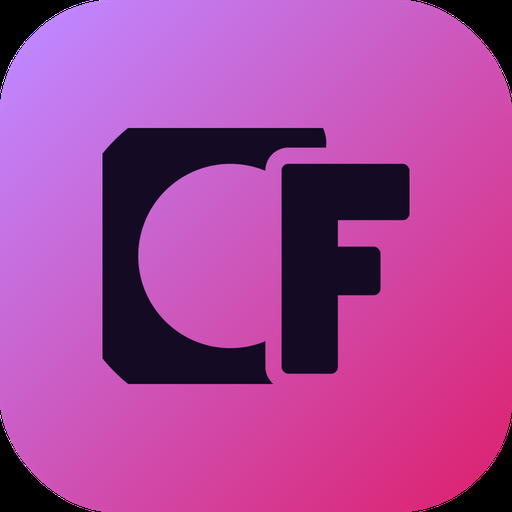

CapitalFlowDesignsprache
Alle Bausteine aus css/basis.css, mit echten Inhalten. Was hier nicht steht, gibt es in der App nicht.
Farbe
Jeder Ton hat eine Aufgabe. Violett heißt „ausgewählt oder Hauptaktion“, Grün und Rot heißen Ergebnis, Bernstein heißt „nah an der Schwelle“. Deko-Farbe gibt es nicht.
#0F1218#161A22#1D222C#2A303C#E7EAF0#A3ACBB#6D5AE6 · Text #A596F7#12A38F · Text #3CC4A8#E5484D · Text #F4777B#C98500 · Text #E8AE4F#3987E5#D4A5FFSchrift
IBM Plex Sans, drei Schnitte. Ziffern sind überall gleich breit, damit Beträge in Spalten untereinander stehen. Beschriftungen in normaler Schreibweise, keine Großbuchstaben-Etiketten.
Kennzahlen
Eine Leiste statt vier einzelner Karten. Farbe nur beim Ergebnis, nicht bei neutralen Werten.
Netto-Ergebnis
Trefferquote
Ø Chance-Risiko
Größter Verlust
KO-Abstand
Das Erkennungszeichen der App. Links die KO-Schwelle, die Skala reicht bis 20 % Abstand, Striche bei 5 % und 10 %. Unter 5 % wird es bernsteinfarben und sagt es zusätzlich in Worten.
DAX Long
Hebel 14,2NVIDIA Short
Hebel 8,9Gold Long
Hebel 5,1Tabelle
Beträge rechtsbündig, gleich breite Ziffern, Linien nur zwischen den Zeilen. Richtung und Ergebnis als kleine Marke, nicht als farbige Zeile.
| Basiswert | Richtung | Setup | Einsatz | Ergebnis | R | Geschlossen |
|---|---|---|---|---|---|---|
| DAXTurbo Long · KO 18.200 | Long | Ausbruch | 500,00 € | +182,40 € | +2,1 | 29.09., 16:42 |
| NVIDIATurbo Short · KO 192,40 | Short | Rücklauf | 300,00 € | −96,00 € | −1,0 | 26.09., 21:03 |
| GoldFaktor 5 Long | Long | Trendfolge | 1.000,00 € | +54,10 € | ohne Stop | 24.09., 10:15 |
| Deutsche BankTurbo Long · KO 15,80 | Long | Ausbruch | 250,00 € | −250,00 € | −2,4 | 20.09., 09:31 KO getroffen |
Diagramme
Höchstens zwei Linien, beide direkt beschriftet, die zweite gestrichelt. Balken tragen ihren Wert daneben. Grün und Rot nur, wenn das Vorzeichen die Aussage ist.
Kontostand
SeptemberErgebnis nach Setup
41 TradesKnöpfe und Auswahl
Pro Bildschirm genau ein violetter Knopf. Alles andere ist grau oder leise. Löschen ist rot umrandet, nie gefüllt.
Formular
Beschriftung über dem Feld, Einheit im Feld, Fehler sagt, was zu tun ist.
Hinweise und leere Zustände
Hinweise sagen, was passiert ist und was jetzt zu tun ist. Ein leerer Bildschirm ist eine Aufforderung, keine Entschuldigung.
Noch keine Trades
Lade deinen Transaktionsexport hoch. Die App erkennt Knock-Outs und Faktor-Zertifikate selbst.